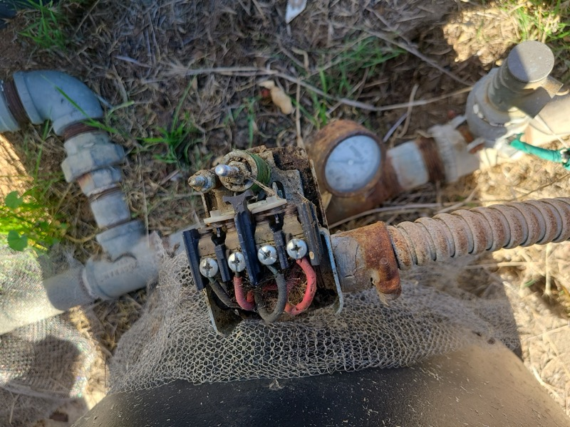

Drilled Well No Water? 7 Reasons Your New Well Isn't Producing
You just invested thousands in drilling a new well — and there's no water. Here's what might be wrong and what you can do about it.
Need Help With Your Well?
Our experts are ready to help. Free estimates, same-day emergency service.
📞 (760) 440-8520 Get Free Estimate →
Few things are more frustrating than spending $15,000-$50,000 on a new well only to find little or no water coming out. Unfortunately, this happens more often than people realize — especially in areas with challenging geology like parts of San Diego, Riverside, and San Bernardino counties.
The good news? A "dry" new well isn't always hopeless. Let's look at why this happens and what can be done.
7 Reasons Your Newly Drilled Well Has No Water
1. Drilled Into an Unproductive Zone
Not all underground formations contain water. In Southern California, we deal with:
- Decomposed granite — Can be hit or miss for water
- Fractured rock — Water only in the fractures, which are unpredictable
- Clay layers — Block water movement
- Dry sand — Above the water table
Even with the best geological surveys, underground water is never guaranteed. We've drilled wells 50 feet apart where one produces 30 GPM and the other produces 1 GPM.
2. Well Not Deep Enough
Water tables vary dramatically by location and season. In drought years, static water levels in San Diego County have dropped 50+ feet in some areas. If the well was drilled to a depth that was adequate 10 years ago, it might be too shallow now.
Solution: The well can often be deepened to reach productive zones. This costs less than drilling a completely new well.
3. Poor Well Development
After drilling, every well needs "development" — the process of clearing drilling mud and fine particles from the formation to allow water to flow freely. If development wasn't done properly (or at all), the well may appear dry when there's actually water available.
Signs of poor development:
- Cloudy or muddy water that never clears
- Water flow that started then stopped
- Pump cycling frequently
Solution: Professional well development using air lifting, surging, or jetting can often unlock water that's trapped behind drilling debris.
4. Clogged or Damaged Well Screen
The well screen (the slotted section at the bottom of the casing) allows water to enter while keeping sand out. If the screen slots are:
- Too small for the formation
- Clogged with drilling mud
- Damaged during installation
- Not positioned in the water-bearing zone
...water won't be able to enter the well effectively.
Solution: A video inspection can identify screen issues. In some cases, the screen can be cleaned or the well can be rehabilitated.
5. Pump Problems (Not the Well)
Before assuming the well is dry, rule out equipment issues:
- Pump installed too shallow
- Pump not sized correctly
- Electrical problems preventing pump operation
- Check valve failure
- Airlocked pump
We've seen "dry wells" that turned out to be pump installations where the pump was set above the water level.
6. Seasonal Water Table Fluctuation
If the well was drilled at the end of a rainy season when water tables are highest, it might run dry during dry months. This is especially common with shallow wells (under 200 feet in our area).
A well that produces 5 GPM in March might produce 1 GPM in October. If it was marginal to begin with, seasonal drop could take it to zero.
7. Neighboring Wells or Development
If new wells were drilled nearby, or if development increased water demand in your area, the aquifer may be overtaxed. This is common in rapidly developing areas of Riverside and San Bernardino counties.
What Can Be Done About a Dry New Well?
Option 1: Professional Well Development
Cost: $500-$2,000
If the well wasn't properly developed, this is the first thing to try. Air lifting and surging can often double or triple the yield of an underdeveloped well.
Option 2: Hydrofracturing
Cost: $3,000-$8,000
For wells in fractured rock, hydrofracturing (also called hydrofracking — different from oil/gas fracking) uses high-pressure water to clean and enlarge existing fractures, allowing more water to flow. Success rate is about 70% in appropriate formations.
Option 3: Deepen the Existing Well
Cost: $50-$100 per foot + mobilization
If the driller stopped just short of a productive zone, deepening can reach it. This requires removing the pump and may require replacing the casing.
Option 4: Drill a New Well
Cost: $15,000-$50,000+
Sometimes the only option is to drill in a different location. A different spot — even 50-100 feet away — can hit completely different geology.
⚠️ Before You Drill Again
If you're considering drilling a new well after a dry hole, make sure to:
- Get a geological survey or consult with a hydrogeologist
- Research neighboring wells (public records, ask neighbors)
- Consider the reputation and experience of the driller
- Discuss what happens if the new well is also dry
Questions to Ask Your Driller
If you drilled a well and got no water, here are questions for your well contractor:
- What formations did you drill through?
- Did you see any water during drilling? At what depth?
- How was the well developed? For how long?
- Where is the screen set? Is it in the water-bearing zone?
- What's the static water level?
- Did you do a pump test? What was the yield?
- What are our options for improving yield?
San Diego County Considerations
Our area has particularly challenging geology for well drilling:
- East County (Ramona, Julian, Alpine) — Fractured granite, highly variable yields
- North County (Valley Center, Fallbrook) — Mix of decomposed granite and sedimentary rock
- Borrego Springs area — Declining aquifer, increasingly deep wells needed
Average well depths have increased 100+ feet over the past 20 years in many areas due to declining water tables.
Need Help With a Dry Well?
Whether it's a well we drilled or someone else drilled, we can help diagnose why it's not producing and recommend solutions. Video inspections, well development, and rehabilitation are all options we can discuss.
Related Articles
Warning Signs Your Well Is Going Dry
Know the symptoms before you lose water completely
Well Drilling Cost in San Diego County
What to expect for drilling a new well
Well Rehabilitation Cost Guide
Costs for development, hydrofracking, and more
No Water From Well? Emergency Guide
Immediate steps when your well stops producing